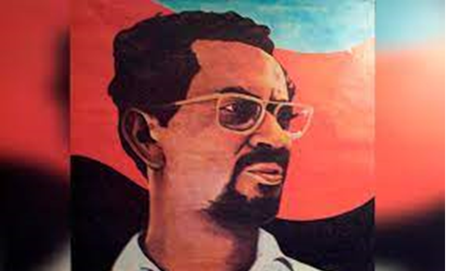
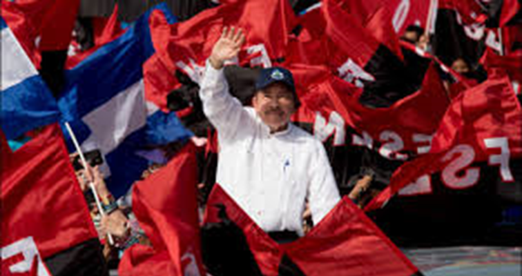

SANDINISTA REVOLUTION
The National Liberation Front, FSLN. Which takes its name from the Algerian independence organization: Algerian National Liberation Front, which led the struggle for the independence of Algeria from France. The formation does not arise through a congress or an assembly whose preparation would have required a previous theoretical process, but from the action itself. Carlos Fonseca himself put it this way: The Front was not born from an assembly or a congress, nor did it issue a proclamation announcing its creation. Nor did he present a program. In the Front, action was first and based on its first experiences it was formulating and reformulating, because it has always had a great sense of self-criticism, its program, its strategy and its tactics. The FSLN is a genuine product of the popular history of Nicaragua.
The FSLN led the armed struggle against the dictatorship of the Somoza family in Nicaragua from its foundation, going through several periods; from many armed and political actions, until its almost disappearance at the beginning of the 1970s. In 1974, a growing process of armed activities began that reached its peak in mid-1978 and led to the triumph of the revolution in 1979. This struggle is called Nicaraguan Revolution or Popular Sandinista Revolution and allowed the entry, and rise to power, of the revolutionaries in Managua on July 19, 1979; and the overthrow of the dictatorship of Anastasio Somoza Debayle, son of Anastasio Somoza García who is the origin of what was called the "Somoza Dynasty", in power in Nicaragua since the assassination of Augusto C. Sandino in 1934.
The Sandinista Popular Revolution or Nicaraguan Revolution was a political process initiated in Nicaragua in July 1979 by the Sandinista National Liberation Front (FSLN) (named in memory of Augusto César Sandino) that put an end to the dictatorship of the Somoza family and lasted until February 1990, when the FSLN lost the February 1990 elections to the National Opposition Union after a serious economic and social situation in the country. On July 19, 1979, Nicaragua raised its voice and put an end to the tyranny of the Somoza family, as well as its military dictatorship.
he Sandinista National Liberation Front (FSLN) was the organization in charge of confronting the Somozas and putting an end to their government, achieving the dismissal of Anastasio Somoza Debayle. The struggle had begun during the 20th century, intensifying in 1978, the following year (1979) a unity agreement was signed by the FSLN representatives. On July 19, 1979, the FSLN entered Managua together with several Nicaraguan inhabitants, obtaining the defeat of Anastasio Somoza Debayle.
For this reason, every July 19 in Nicaragua they celebrate what has been considered one of the greatest heroic deeds. On this day, commemorative events are held in the capital, such as a speech by the president attended by society in general and some political figures.



